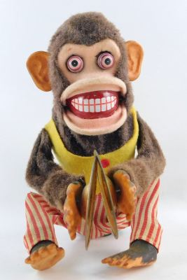

My wife is Polish, which means she doesn’t mince her words, and can be very direct, issuing requests and commands without the usual English fluff; “Would you mind doing…”, “Could you…”, “Have you thought about doing…”.
Despite this directness of language, it turns out that the Poles have some wonderfully vivid and imaginative idioms and phrases in everyday use. I decided to document a small selection here, to give you an impression of the colourful Polish language.| Polish: | być głupim jak but |
| Translation: | to be as stupid as a shoe |
| Example: | “My husband is as stupid as a shoe.” |
| Equivalents: | dead from the neck up thick as two short planks |
| Polish: | zrobili mnie w konia |
| Translation: | to be made a horse of |
| Example: | “He said he’d shower me with presents after we got married, but I was made into a horse.” |
| Equivalents: | pull the wool over her eyes lead her up the garden path |
| Polish: | mieć muchy w nosie |
| Translation: | to have flies up ones nose |
| Example: | “Leave him be; he has flies up his nose!” |
| Equivalents: | he’s like a bear with a sore head |
| Polish: | ma węża w kieszeni |
| Translation: | to have a snake in the pocket |
| Example: | “My husband, buy me a ring!? He’s got a snake in his pocket!” |
| Equivalents: | he’s as tight as a duck’s arse |
You would be reluctant to put your hand in your own pocket if you knew that it contained a deadly snake waiting to bite you, wouldn’t you?
| Polish: | małe piwo |
| Translation: | small beer |
| Example: | “You want me to knock you up a quick meal? Small beer!” |
| Equivalents: | piece of cake easy peasy |
| Polish: | gruszki na wierzbie |
| Translation: | pears on a willow tree |
| Example: | “He’ll do all the housework for a week? I think he’s promising you pears on a willow tree.” |
| Equivalents: | pay lip service jam tomorrow |
Promising pears from a willow tree, a fine example of the earthy, rustic imagery employed in may Polish sayings.
“Jam tomorrow” originates from Lewis Carroll’s Through The Looking Glass, in which the White Queen offers Alice *"jam tomorrow, jam yesterday, but never jam today.
| Polish: | Nie mój cyrk, nie moje małpy |
| Translation: | not my circus, not my monkeys |
| Example: | “Tidy up your big, fat political mess, Boris? Not my circus, not my monkeys!” |
| Equivalents: | it’s not my problem, mate |
My favourite idiom: It’s your chaotic, farcical creation, nothing to do with me! Is there an equivalent idiom as colourful as this one in English?